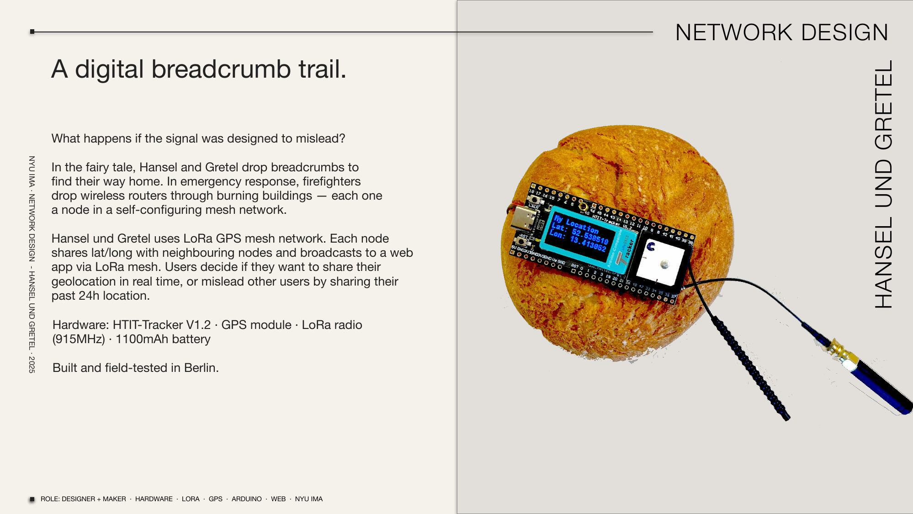

hansel und gretel
A digital breadcrumb trail. What happens if the signal was designed to mislead? In the fairy tale, Hansel and Gretel drop breadcrumbs to find their way home. In emergency response, firefighters drop wireless routers into burning buildings — each one a node in a self-configuring mesh network. Hansel und Gretel uses LoRa GPS mesh. Each node shares lat/long with neighbouring nodes and broadcasts to a web app via LoRa mesh. Users decide if they want to share their geolocation in real time, or mislead other users by sharing their past 24h location.
Hardware: HTIT-Tracker V1.2 · GPS module · LoRa radio (915MHz) · 1100mAh battery
Stack: Arduino · LoRa mesh protocol · Web
Built and field-tested in Berlin. NYU IMA, 2024–2025.